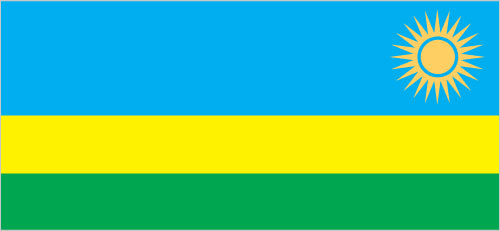
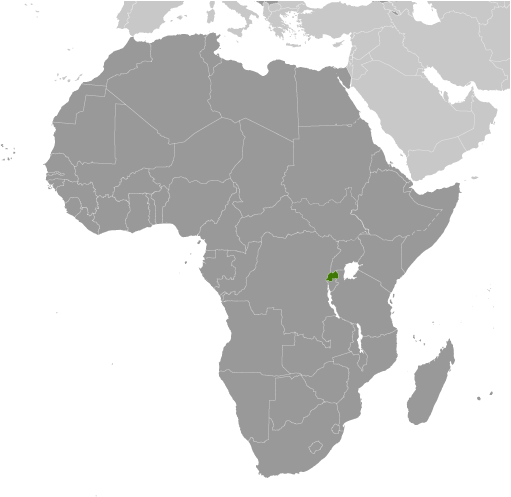
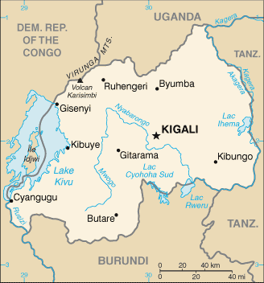

Africa :: RWANDA
Introduction :: RWANDA
-
In 1959, three years before independence from Belgium, the majority ethnic group, the Hutus, overthrew the ruling Tutsi king. Over the next several years, thousands of Tutsis were killed, and some 150,000 driven into exile in neighboring countries. The children of these exiles later formed a rebel group, the Rwandan Patriotic Front (RPF), and began a civil war in 1990. The war, along with several political and economic upheavals, exacerbated ethnic tensions, culminating in April 1994 in a state-orchestrated genocide, in which Rwandans killed up to a million of their fellow citizens, including approximately three-quarters of the Tutsi population. The genocide ended later that same year when the predominantly Tutsi RPF, operating out of Uganda and northern Rwanda, defeated the national army and Hutu militias, and established an RPF-led government of national unity. Approximately 2 million Hutu refugees - many fearing Tutsi retribution - fled to neighboring Burundi, Tanzania, Uganda, and former Zaire. Since then, most of the refugees have returned to Rwanda, but several thousand remained in the neighboring Democratic Republic of the Congo (DRC, the former Zaire) and formed an extremist insurgency bent on retaking Rwanda, much as the RPF did in 1990. Rwanda held its first local elections in 1999 and its first post-genocide presidential and legislative elections in 2003. Rwanda in 2009 staged a joint military operation with the Congolese Army in DRC to rout out the Hutu extremist insurgency there, and Kigali and Kinshasa restored diplomatic relations. Rwanda also joined the Commonwealth in late 2009 and assumed a nonpermanent seat on the UN Security Council for the 2013-14 term.
Geography :: RWANDA
-
Central Africa, east of the Democratic Republic of the Congo, north of Burundi2 00 S, 30 00 EAfricatotal: 26,338 sq kmland: 24,668 sq kmwater: 1,670 sq kmcountry comparison to the world: 149slightly smaller than Marylandtotal: 930 kmborder countries (4): Burundi 315 km, Democratic Republic of the Congo 221 km, Tanzania 222 km, Uganda 172 km0 km (landlocked)none (landlocked)temperate; two rainy seasons (February to April, November to January); mild in mountains with frost and snow possiblemostly grassy uplands and hills; relief is mountainous with altitude declining from west to eastmean elevation: 1,598 melevation extremes: lowest point: Rusizi River 950 mhighest point: Volcan Karisimbi 4,519 mgold, cassiterite (tin ore), wolframite (tungsten ore), methane, hydropower, arable landagricultural land: 74.5%arable land 47%; permanent crops 10.1%; permanent pasture 17.4%forest: 18%other: 7.5% (2011 est.)96 sq km (2012)one of Africa's most densely populated countries; large concentrations tend to be in the central regions and along the shore of Lake Kivu in the westperiodic droughts; the volcanic Virunga Mountains are in the northwest along the border with Democratic Republic of the Congovolcanism: Visoke (3,711 m), located on the border with the Democratic Republic of the Congo, is the country's only historically active volcanodeforestation results from uncontrolled cutting of trees for fuel; overgrazing; soil exhaustion; soil erosion; widespread poachingparty to: Biodiversity, Climate Change, Climate Change-Kyoto Protocol, Desertification, Endangered Species, Hazardous Wastes, Ozone Layer Protection, Wetlandssigned, but not ratified: Law of the Sealandlocked; most of the country is savanna grassland with the population predominantly rural
People and Society :: RWANDA
-
11,901,484note: estimates for this country explicitly take into account the effects of excess mortality due to AIDS; this can result in lower life expectancy, higher infant mortality, higher death rates, lower population growth rates, and changes in the distribution of population by age and sex than would otherwise be expected (July 2017 est.)country comparison to the world: 76noun: Rwandan(s)adjective: RwandanHutu (Bantu), Tutsi (Hamitic), Twa (Pygmy)Kinyarwanda (official, universal Bantu vernacular) 93.2%, French (official) <.1, English (official) <.1, Swahili (or Kiswahili, used in commercial centers) <.1, more than one language, other 6.3%, unspecified 0.3% (2002 est.)Protestant 50.2% (includes Adventist 12% and other Protestant 38.2%), Roman Catholic 44.3%, Muslim 2%, other 0.9% (includes traditionalist/animist), none 2.5%, unspecified <.1 (2002 est.)Rwanda’s fertility rate declined sharply during the last decade, as a result of the government’s commitment to family planning, the increased use of contraceptives, and a downward trend in ideal family size. Increases in educational attainment, particularly among girls, and exposure to social media also contributed to the reduction in the birth rate. The average number of births per woman decreased from a 5.6 in 2005 to 4.5 in 2016. Despite these significant strides in reducing fertility, Rwanda’s birth rate remains very high and will continue to for an extended period of time because of its large population entering reproductive age. Because Rwanda is one of the most densely populated countries in Africa, its persistent high population growth and increasingly small agricultural landholdings will put additional strain on families’ ability to raise foodstuffs and access potable water. These conditions will also hinder the government’s efforts to reduce poverty and prevent environmental degradation.The UNHCR recommended that effective 30 June 2013 countries invoke a cessation of refugee status for those Rwandans who fled their homeland between 1959 and 1998, including the 1994 genocide, on the grounds that the conditions that drove them to seek protection abroad no longer exist. The UNHCR’s decision is controversial because many Rwandan refugees still fear persecution if they return home, concerns that are supported by the number of Rwandans granted asylum since 1998 and by the number exempted from the cessation. Rwandan refugees can still seek an exemption or local integration, but host countries are anxious to send the refugees back to Rwanda and are likely to avoid options that enable them to stay. Conversely, Rwanda itself hosts almost 160,000 refugees as of 2017; virtually all of them fleeing conflict in neighboring Burundi and the Democratic Republic of the Congo.0-14 years: 41.38% (male 2,485,386/female 2,439,101)15-24 years: 19.34% (male 1,151,657/female 1,149,928)25-54 years: 32.77% (male 1,845,501/female 2,054,410)55-64 years: 4.09% (male 216,725/female 269,972)65 years and over: 2.43% (male 113,822/female 174,982) (2017 est.)total dependency ratio: 77.3youth dependency ratio: 72.4elderly dependency ratio: 5potential support ratio: 20.1 (2015 est.)total: 19 yearsmale: 18.3 yearsfemale: 19.8 years (2017 est.)country comparison to the world: 2032.45% (2017 est.)country comparison to the world: 2330.7 births/1,000 population (2017 est.)country comparison to the world: 356.4 deaths/1,000 population (2017 est.)country comparison to the world: 1490.2 migrant(s)/1,000 population (2017 est.)country comparison to the world: 68one of Africa's most densely populated countries; large concentrations tend to be in the central regions and along the shore of Lake Kivu in the westurban population: 30.7% of total population (2017)rate of urbanization: 5.59% annual rate of change (2015-20 est.)KIGALI (capital) 1.257 million (2015)at birth: 1.03 male(s)/female0-14 years: 1.02 male(s)/female15-24 years: 1 male(s)/female25-54 years: 1 male(s)/female55-64 years: 0.88 male(s)/female65 years and over: 0.7 male(s)/femaletotal population: 1 male(s)/female (2016 est.)23 yearsnote: median age at first birth among women 25-29 (2014/15 est.)290 deaths/100,000 live births (2015 est.)country comparison to the world: 43total: 29.7 deaths/1,000 live birthsmale: 32.7 deaths/1,000 live birthsfemale: 26.7 deaths/1,000 live births (2017 est.)country comparison to the world: 64total population: 64.3 yearsmale: 62.3 yearsfemale: 66.3 years (2017 est.)country comparison to the world: 1873.87 children born/woman (2017 est.)country comparison to the world: 3853.2% (2014/15)7.5% of GDP (2014)country comparison to the world: 650.06 physicians/1,000 population (2010)1.6 beds/1,000 population (2007)improved:urban: 86.6% of populationrural: 71.9% of populationtotal: 76.1% of populationunimproved:urban: 13.4% of populationrural: 28.1% of populationtotal: 23.9% of population (2015 est.)improved:urban: 58.5% of populationrural: 62.9% of populationtotal: 61.6% of populationunimproved:urban: 41.5% of populationrural: 37.1% of populationtotal: 38.4% of population (2015 est.)3.1% (2016 est.)country comparison to the world: 18220,000 (2016 est.)country comparison to the world: 273,300 (2016 est.)country comparison to the world: 39degree of risk: very highfood or waterborne diseases: bacterial diarrhea, hepatitis A, and typhoid fevervectorborne diseases: malaria and dengue feveranimal contact disease: rabies (2016)5.8% (2016)country comparison to the world: 1749.3% (2015)country comparison to the world: 635% of GDP (2013)country comparison to the world: 73definition: age 15 and over can read and writetotal population: 70.5%male: 73.2%female: 68% (2015 est.)total: 11 yearsmale: 11 yearsfemale: 11 years (2013)total: 4.4%male: 3.6%female: 5.2% (2012 est.)
Government :: RWANDA
-
conventional long form: Republic of Rwandaconventional short form: Rwandalocal long form: Republika y'u Rwandalocal short form: Rwandaformer: Ruanda, German East Africaetymology: the name translates as "domain" in the native Kinyarwanda languagepresidential republicname: Kigaligeographic coordinates: 1 57 S, 30 03 Etime difference: UTC+2 (7 hours ahead of Washington, DC, during Standard Time)4 provinces (in French - provinces, singular - province; in Kinyarwanda - intara for singular and plural) and 1 city* (in French - ville; in Kinyarwanda - umujyi); Est (Eastern), Kigali*, Nord (Northern), Ouest (Western), Sud (Southern)1 July 1962 (from Belgium-administered UN trusteeship)Independence Day, 1 July (1962)history: several previous; latest adopted by referendum 26 May 2003, effective 4 June 2003amendments: proposed by the president of the republic (with Council of Ministers approval) or by two-thirds majority support of both houses of Parliament; passage requires at least three-quarters majority vote in both houses; changes to constitutional articles on national sovereignty, the presidential term, the form and system of government, and political pluralism also require approval in a referendum; amended 2008, 2010, 2015 (2017)mixed legal system of civil law, based on German and Belgian models, and customary law; judicial review of legislative acts in the Supreme Courthas not submitted an ICJ jurisdiction declaration; non-party state to the ICCtcitizenship by birth: nocitizenship by descent only: the father must be a citizen of Rwanda; if the father is stateless or unknown, the mother must be a citizendual citizenship recognized: noresidency requirement for naturalization: 10 years18 years of age; universalchief of state: President Paul KAGAME (since 22 April 2000)head of government: Prime Minister Edouard NGIRENTE (since 30 August 2017)cabinet: Council of Ministers appointed by the presidentelections/appointments: president directly elected by simple majority vote for a 7-year term (eligible for a second term); note - constitutional amendments approved in December 2016, included one that reduces the presidential term from 7 to 5 years but includes an exception that allowed President KAGAME to serve another 7-year term in 2017, potentially followed by two additional 5-year terms; election last held on 4 August 2017 (next to be held on 4 August 2024); prime minister appointed by the presidentelection results: Paul KAGAME reelected president; Paul KAGAME (RPF) 98.8%, Philippe MPAYIMANA (independent) 0.7%, Frank HABINEZA (DGP)0.5%description: bicameral Parliament consists of the Senate or Senat (26 seats; 12 members indirectly elected by local councils, 8 appointed by the president, 4 appointed by the Political Organizations Forum - a body of registered political parties, and 2 selected by institutions of higher learning; members serve 8-year terms) and the Chamber of Deputies or Chambre des Deputes (80 seats; 53 members directly elected by proportional representation vote, 24 women elected by special interest groups, and 3 selected by youth and disability organizations; members serve 5-year terms)elections: Senate - NA; Chamber of Deputies - last held on 16-18 September 2013 (next to be held in 2018)election results: Chamber of Deputies - percent of vote by party - Rwandan Patriotic Front Coalition 76.2%, PSD 13%, PL 9.3%, other 1.5%; seats by party - Rwandan Patriotic Front Coalition 41, PSD 7, PL 5, 27 indirectly elected membershighest court(s): Supreme Court (consists of the chief and deputy chief justices and 15 judges; normally organized into 3-judge panels); High Court (consists of the court president, vice president, and a minimum of 24 judges and organized into 5 chambersnote: Supreme Court judges nominated by the president of the republic after consultation with the Cabinet and the Superior Council of the Judiciary or SCJ (a 27-member body of judges, other judicial officials, and legal professionals) and approved by the Senate; chief and deputy chief justices appointed for 8-year nonrenewable terms; tenure of judges NA; High Court president and vice president appointed by the president of the republic upon approval by the Senate; judges appointed by the Supreme Court chief justice upon approval of the SCJ; judge tenure NAjudge selection and term of office: High Court of the Republic; commercial courts including the High Commercial Court; intermediate courts; primary courts; Gacaca and military specialized courtssubordinate courts: High Court of the Republic; commercial courts including the High Commercial Court; intermediate courts; primary courts; Gacaca and military specialized courtsLiberal Party or PL [Donatille MUKABALISA]Party for Progress and Concord or PPC [Dr. Alivera MUKABARAMBA]Rwandan Patriotic Front or RPF [Paul KAGAME]Rwandan Patriotic Front Coalition (includes RPF, PPC) [Paul KAGAME]Social Democratic Party or PSD [Vincent BIRUTA]IBUKA (association of genocide survivors)ACP, AfDB, AU, C, CEPGL, COMESA, EAC, EADB, FAO, G-77, IAEA, IBRD, ICAO, ICRM, IDA, IFAD, IFC, IFRCS, ILO, IMF, Interpol, IOC, IOM, IPU, ISO, ITSO, ITU, ITUC (NGOs), MIGA, MINUSMA, NAM, OIF, OPCW, PCA, UN, UNAMID, UNCTAD, UNESCO, UNHCR, UNIDO, UNISFA, UNMISS, UNWTO, UPU, WCO, WHO, WIPO, WMO, WTOchief of mission: Ambassador Mathilde MUKANTABANA (since 18 July 2013)chancery: 1875 Connecticut Avenue, NW, Suite 418, Washington, DC, 2000telephone: [1] (202) 232-2882FAX: [1] (202) 232-4544chief of mission: Ambassador Erica BARKS-RUGGLES (since 26 January 2015)embassy: 2657 Avenue de la Gendarmerie, Kigalimailing address: B.P. 28, Kigalitelephone: [250] 252 596-400FAX: [250] 252 580 325three horizontal bands of sky blue (top, double width), yellow, and green, with a golden sun with 24 rays near the fly end of the blue band; blue represents happiness and peace, yellow economic development and mineral wealth, green hope of prosperity and natural resources; the sun symbolizes unity, as well as enlightenment and transparency from ignorancetraditional woven basket with peaked lid; national colors: blue, yellow, greenname: "Rwanda nziza" (Rwanda, Our Beautiful Country)lyrics/music: Faustin MURIGO/Jean-Bosco HASHAKAIMANAnote: adopted 2001
Economy :: RWANDA
-
Rwanda is a rural, agrarian country with about 35% of the population engaged in subsistence agriculture, and with some mineral and agro-processing. Population density is high but not concentrated in large metropolises – its 13 million people are spread out on a small amount of land (about the size of Vermont and New Hampshire combined). Tourism, minerals, coffee, and tea are Rwanda's main sources of foreign exchange. Despite Rwanda's fertile ecosystem, food production often does not keep pace with demand, requiring food imports. Energy shortages, instability in neighboring states, and lack of adequate transportation linkages to other countries continue to handicap private sector growth.The 1994 genocide decimated Rwanda's fragile economic base, severely impoverished the population, particularly women, and temporarily stalled the country's ability to attract private and external investment. However, Rwanda has made substantial progress in stabilizing and rehabilitating its economy beyond pre-1994 levels. GDP has rebounded with an average annual growth of 6%-8% since 2003 and inflation has been reduced to single digits. In 2015, 39% of the population lived below the poverty line, according to government statistics, compared to 57% in 2006. Mining profits in 2015 were reduced by almost half, owing to the drop in global demand for minerals.Africa's most densely populated country is trying to overcome the limitations of its small, landlocked economy by leveraging regional trade; Rwanda joined the East African Community and is aligning its budget, trade, and immigration policies with its regional partners. The government has embraced an expansionary fiscal policy to reduce poverty by improving education, infrastructure, and foreign and domestic investment. In recognition of Rwanda's successful management of its macro economy, the IMF graduated Rwanda to a Policy Support Instrument in 2010.The Rwandan Government is seeking to become a regional leader in information and communication technologies. In 2012, Rwanda completed the first modern Special Economic Zone (SEZ) in Kigali. The SEZ seeks to attract investment in all sectors, but specifically in agribusiness, information and communications, trade and logistics, mining, and construction. In 2016, the government launched an online system to give investors information about public land and its suitability for agricultural development.$22.79 billion (2016 est.)$21.24 billion (2015 est.)$19.3 billion (2014 est.)note: data are in 2016 dollarscountry comparison to the world: 141$8.406 billion (2016 est.)5.9% (2016 est.)8.9% (2015 est.)7.6% (2014 est.)country comparison to the world: 28$2,000 (2016 est.)$1,900 (2015 est.)$1,800 (2014 est.)note: data are in 2016 dollarscountry comparison to the world: 2047.6% of GDP (2016 est.)8.7% of GDP (2015 est.)8.6% of GDP (2014 est.)country comparison to the world: 148household consumption: 76.8%government consumption: 15.2%investment in fixed capital: 25.6%investment in inventories: 0.6%exports of goods and services: 15.1%imports of goods and services: -33.2% (2016 est.)agriculture: 31.5%industry: 17.6%services: 50.8% (2016 est.)coffee, tea, pyrethrum (insecticide made from chrysanthemums), bananas, beans, sorghum, potatoes; livestockcement, agricultural products, small-scale beverages, soap, furniture, shoes, plastic goods, textiles, cigarettes6.8% (2016 est.)country comparison to the world: 256.011 million (2016 est.)country comparison to the world: 74agriculture: 75.3%industry: 6.7%services: 18% (2012 est.)2.7% (2014 est.)country comparison to the world: 2539.1% (2015 est.)lowest 10%: 2.1%highest 10%: 43.2% (2011 est.)46.8 (2000)28.9 (1985)country comparison to the world: 29revenues: $1.958 billionexpenditures: $2.268 billion (2016 est.)23.3% of GDP (2016 est.)country comparison to the world: 128-3.7% of GDP (2016 est.)country comparison to the world: 13343.4% of GDP (2016 est.)36.2% of GDP (2015 est.)country comparison to the world: 120calendar year5.7% (2016 est.)2.5% (2015 est.)country comparison to the world: 1797.75% (31 December 2010)11.25% (31 December 2008)country comparison to the world: 4117.3% (31 December 2016 est.)17.33% (31 December 2015 est.)country comparison to the world: 25$940.6 million (31 December 2016 est.)$1.013 billion (31 December 2015 est.)country comparison to the world: 155$1.903 billion (31 December 2016 est.)$1.64 billion (31 December 2015 est.)country comparison to the world: 155$1.959 billion (31 December 2016 est.)$1.337 billion (31 December 2015 est.)country comparison to the world: 146$NA$-1.211 billion (2016 est.)$-1.106 billion (2015 est.)country comparison to the world: 133$745 million (2016 est.)$683.7 million (2015 est.)country comparison to the world: 165coffee, tea, hides, tin oreDemocratic Republic of the Congo 31.3%, Kenya 15.7%, UAE 13.8%, Switzerland 8.7%, Burundi 5.7% (2016)$2.045 billion (2016 est.)$1.919 billion (2015 est.)country comparison to the world: 157foodstuffs, machinery and equipment, steel, petroleum products, cement and construction materialChina 21.2%, Uganda 11.2%, Kenya 7.8%, India 7.4%, UAE 5.8%, Tanzania 5.3% (2016)$1.104 billion (31 December 2016 est.)$1.03 billion (31 December 2015 est.)country comparison to the world: 123$2.611 billion (31 December 2016 est.)$2.244 billion (31 December 2015 est.)country comparison to the world: 145$2.072 billion (31 December 2016 est.)$1.813 billion (31 December 2015 est.)country comparison to the world: 114$26.8 million (31 December 2016 est.)$20.2 million (31 December 2015 est.)country comparison to the world: 108Rwandan francs (RWF) per US dollar -787.25 (2016 est.)787.25 (2015 est.)720.54 (2014 est.)680.95 (2013 est.)616.6 (2012 est.)
Energy :: RWANDA
-
population without electricity: 9,300,000electrification - total population: 21%electrification - urban areas: 67%electrification - rural areas: 5% (2013)600 million kWh (2015 est.)country comparison to the world: 165644 million kWh (2015 est.)country comparison to the world: 1644 million kWh (2015 est.)country comparison to the world: 9290 million kWh (2015 est.)country comparison to the world: 99152,000 kW (2015 est.)country comparison to the world: 16927.6% of total installed capacity (2015 est.)country comparison to the world: 1870% of total installed capacity (2015 est.)country comparison to the world: 17465.8% of total installed capacity (2015 est.)country comparison to the world: 226.6% of total installed capacity (2015 est.)country comparison to the world: 860 bbl/day (2016 est.)country comparison to the world: 1870 bbl/day (2014 est.)country comparison to the world: 1820 bbl/day (2014 est.)country comparison to the world: 1820 bbl (1 January 2017 es)country comparison to the world: 1850 bbl/day (2014 est.)country comparison to the world: 1916,000 bbl/day (2015 est.)country comparison to the world: 1710 bbl/day (2014 est.)country comparison to the world: 1925,979 bbl/day (2014 est.)country comparison to the world: 1590 cu m (2013 est.)country comparison to the world: 1880 cu m (2013 est.)country comparison to the world: 1250 cu m (2013 est.)country comparison to the world: 1730 cu m (2013 est.)country comparison to the world: 18056.63 billion cu m (1 January 2017 es)country comparison to the world: 63800,000 Mt (2013 est.)country comparison to the world: 172
Communications :: RWANDA
-
total subscriptions: 13,403subscriptions per 100 inhabitants: less than 1 (July 2016 est.)country comparison to the world: 163total: 8,921,533subscriptions per 100 inhabitants: 69 (July 2016 est.)country comparison to the world: 98general assessment: small, inadequate telephone system primarily serves business, education, and governmentdomestic: the capital, Kigali, is connected to provincial centers by microwave radio relay and, recently, by cellular telephone service; much of the network depends on wire and HF radiotelephone; combined fixed-line and mobile-cellular telephone density has increased and now exceeds 65 telephones per 100 personsinternational: country code - 250; international connections employ microwave radio relay to neighboring countries and satellite communications to more distant countries; satellite earth stations - 1 Intelsat (Indian Ocean) in Kigali (includes telex and telefax service) (2015)government owns and operates the only TV station; government-owned and operated Radio Rwanda has a national reach; 9 private radio stations; transmissions of multiple international broadcasters are available (2007).rwtotal: 2,597,685percent of population: 20.0% (July 2016 est.)country comparison to the world: 120
Transportation :: RWANDA
-
number of registered air carriers: 1inventory of registered aircraft operated by air carriers: 9annual passenger traffic on registered air carriers: 645,815annual freight traffic on registered air carriers: 21,382,897 mt-km (2015)9XR (2016)7 (2013)country comparison to the world: 167total: 4over 3,047 m: 1914 to 1,523 m: 2under 914 m: 1 (2017)total: 3914 to 1,523 m: 2under 914 m: 1 (2013)total: 4,700 kmpaved: 1,207 kmunpaved: 3,493 km (2012)country comparison to the world: 152(Lac Kivu navigable by shallow-draft barges and native craft) (2011)lake port(s): Cyangugu, Gisenyi, Kibuye (Lake Kivu)
Military and Security :: RWANDA
-
1.21% of GDP (2016)1.25% of GDP (2015)1.13% of GDP (2014)1.08% of GDP (2013)1.09% of GDP (2012)country comparison to the world: 91Rwanda Defense Force (RDF): Rwanda Army (Rwanda Land Force), Rwanda Air Force (Force Aerienne Rwandaise, FAR) (2013)18 years of age for voluntary military service; no conscription; Rwandan citizenship is required, as is a 9th-grade education for enlisted recruits and an A-level certificate for officer candidates; enlistment is either as contract (5-years, renewable twice) or career; retirement (for officers and senior NCOs) after 20 years of service or at 40-60 years of age (2012)
Transnational Issues :: RWANDA
-
Burundi and Rwanda dispute two sq km (0.8 sq mi) of Sabanerwa, a farmed area in the Rukurazi Valley where the Akanyaru/Kanyaru River shifted its course southward after heavy rains in 1965; fighting among ethnic groups - loosely associated political rebels, armed gangs, and various government forces in Great Lakes region transcending the boundaries of Burundi, Democratic Republic of the Congo (DROC), Rwanda, and Uganda - abated substantially from a decade ago due largely to UN peacekeeping, international mediation, and efforts by local governments to create civil societies; nonetheless, 57,000 Rwandan refugees still reside in 21 African states, including Zambia, Gabon, and 20,000 who fled to Burundi in 2005 and 2006 to escape drought and recriminations from traditional courts investigating the 1994 massacres; the 2005 DROC and Rwanda border verification mechanism to stem rebel actions on both sides of the border remains in placerefugees (country of origin): 88,535 (Burundi); 74,706 (Democratic Republic of the Congo) (2017)